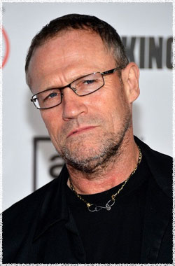

Майкл Рукер
 После преодоления ужасного испытания, Мерл был взят под крыло сильной фигуры - Губернатора. В Вудбери, боевой характер Мерла помог ему подняться в ранге, он стал помощником Губернатора. Вудбери подходит Мерлу как перчатки, но его кровь течёт иначе.
Майкл Рукер известен своим длинным списком разнообразных и выдающихся ролей, таких как Слизняк Джеймса Ганна, Джон Ф. Кеннеди: Выстрелы в Далласе Оливера Стоуна, Скалолаз Ренни Харлин, Ублюдок из Каролины Анжелики Хьюстон и Дни грома Тони Скотта, и это только несколько из многих уважаемых проектов в которых Руке принимал участие. Рукер получил высокую оценку за свое поразительное выступление в приветствуемом критиками фильме Генри: Портрет серийного убийцы.
Родился в Джаспер, Алабама, Рукер вместе с семьей переехал в Чикаго в середине 1960-х. Учился в драматической школе Goodman в Университете Де Пола в Чикаго. После окончания в 1982 году, он быстро начал делать себе имя в театральном сообществе Чикаго.
Совсем недавно Рукер ставил постановку Down and Out в Театре 68 в Голливуде. Он также сыграл в фильмах Телепорт, Болден!, Луиc, Камера 213, Гипотермия и Супер Джеймса Ганна. Он руководил художественный фильмом Pennhurst, который в настоящее время в стадии пост-продакшна. Персонаж Рукера появился в видеоигре Call of Duty: Black Ops 2.
Наиболее известен по фильмам:
Море любви
Власть страха
Детектор лжи
Скалолаз
Мыслить как преступник
Звездные врата: ЗВ-1